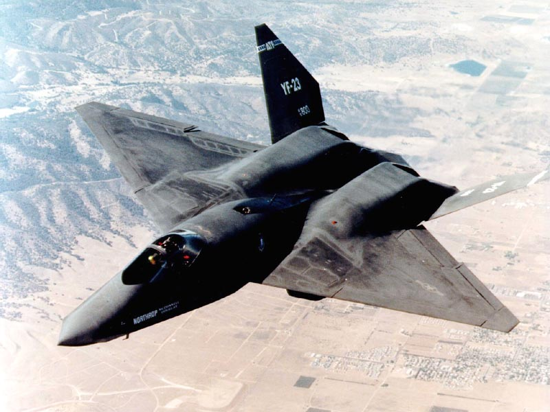
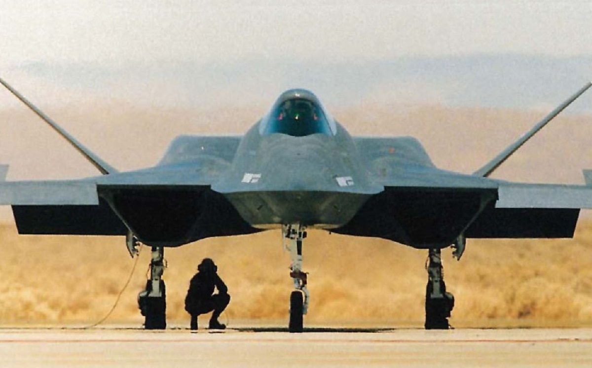
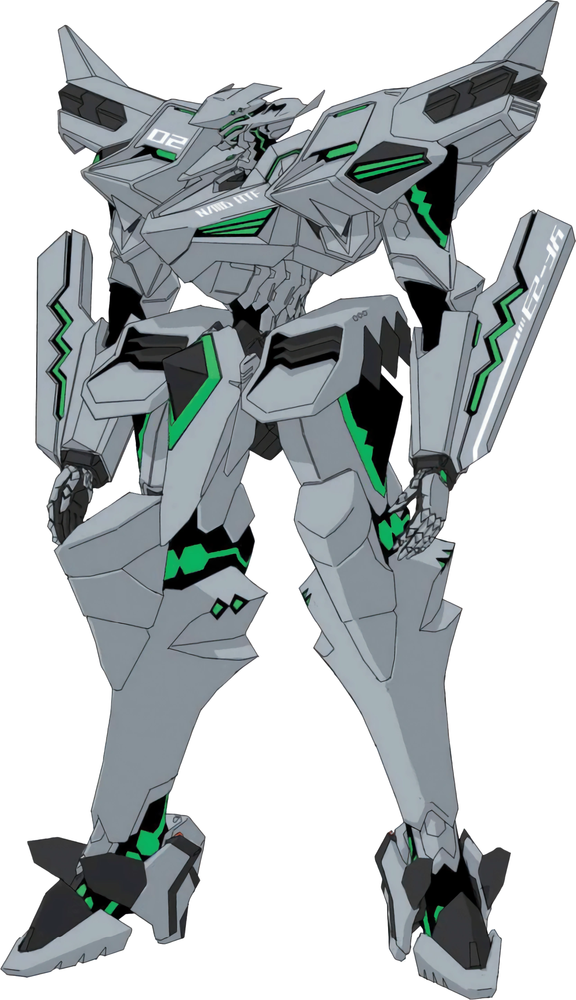

| Descrição | |
|---|---|
| Função: | Demonstração de Tecnologia Stealth |
| Local de Origem: | Estados Unidos |
| Fabricante: | Northrop/McDonnell Douglas |
| Primeiro Voo: | 27 de Agosto de 1990 |
| Introduzido em: | Não Introduzido |
| Status: | Cancelado |
| Utilziadores: | Estados Unidos |
| Produzido: | 1989 a 1990 |
| Caractersiticas Gerais | |
| Tripulação: | 1 |
| Comprimento: | 20.55m |
| Altura: | 4.24m |
| Envergadura das Asas: | 13.28m |
| Area das Asas: | 84m² |
| Peso Vazio: | 13.154kg |
| Peso Bruto: | 23.278kg |
| Peso Máximo de Decolagem: | 28.123kg |
| Capacidade de Combustivel: | Não Disponivel ao Publico |
| Performace | |
| Motores: | 2 x Pratt & Whitney YF-199 ou General Eletric YF120 Turbofan Afterburnig |
| Empuxo: |
|
| Velocidade Máxima: | Mach 2.2 ou 2.335km/h |
| Alcance: | 4.489km |
| Alcance de Combate: | 1.206 a 1.287km |
| Armamento | |
| Armas: | 1 Canhão de 20mm M61 Vulcan |
| Hardpoint | Não Disponivel ao Publico |
| Misseis |
Ar-Ar:
|
O Northrop/mcDonnell Douglas YF-23 um dos finalistas do Advanced Tactical Fighter, sendo um caça de acento unico, dois motores e supersonico,
ele veio a perder para o Lockheed YF-22 que gerou o F-22.

Em uma busca por repor e desevolver caça mais efetivos para contrapor os caças da USSR Sukhoi Su-27 e o Mikoyan MiG-29, foi inicia o programa do ATF,
com varias companhias se submetendo ao projeto. O YF-23 sendo um caça mais stealhier e rapido, no entando ele era menos agil que o YF-22, por conta disso ele perdeu a competição.

Não temos muitas curiosidades por conta do YF-23 não ter sido produzido em larga escala, sendo somente um caça de demosntração de tecnologia.
Mas ele já apareceu em alguns jogos, como na fraquia "Ace Combat" e em "Muv Luv".

O YF-23 na fraquia "Muv Luv"